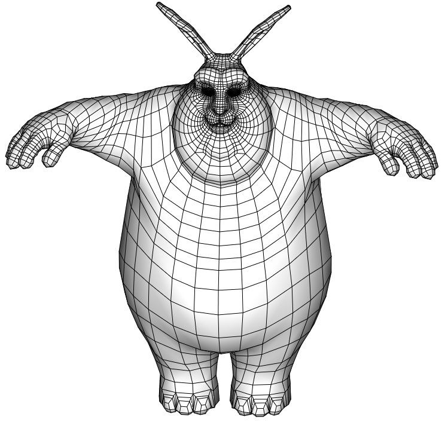
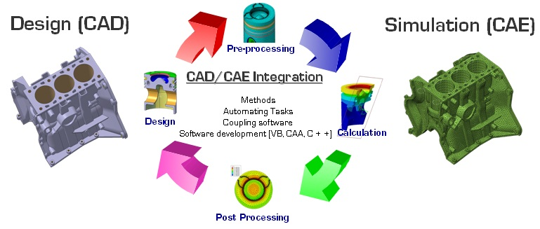
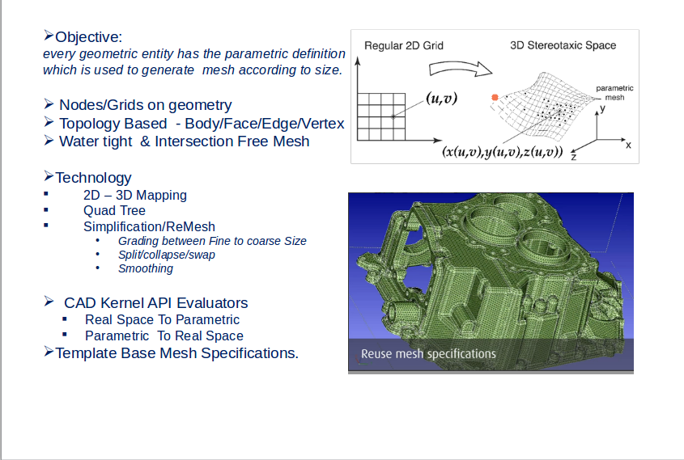
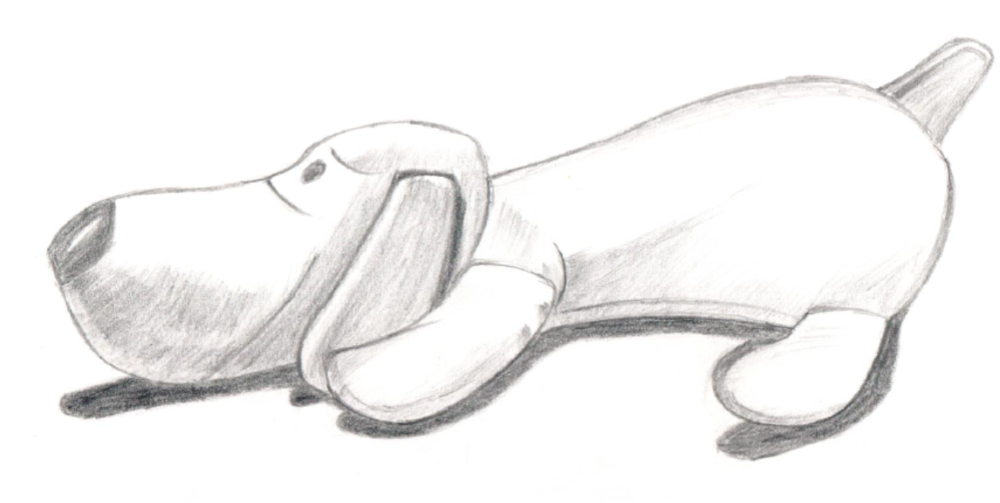

Surface Quad Mesh Generation, Smoothing and Optimization
Sasikrishna Reddy Kollukoduru

Education & Work
- Civil Engineering (1995 - 1999)
- Aero Dynamics (1999 - 2001)
- Technical Specialist (2002 Dec - 2016 July- 13 years)
- at Altair India
- Simulation Technology Services, India
- SimLab Product
- CAE Pre&Post
- Automation of Solid Meshing
- FEA (Power Train)
- CFD
CAE Analysis Process

http://article.sapub.org/10.5923.j.mechanics.20120205.01.html
- Pre-Processing
- Cad Import
- Meshing
- Load and Boundary Condition Set Up
- Export to Solver Deck
Surface Meshing (Triangulation)

Research goals
- Surface Mesh Generation Algorithms for Quad Elements
- Nurbs Surfaces in to Mesh
- Inverstigate Smoothing an Optimization
- Quality Criteria
- Go coding
Intersets
- Physics of Simulation
- Computational Geometry
- Visualization
- High Performance Compuating

THANK YOU